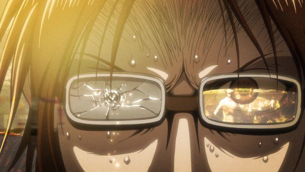

Anime Review: 'Attack on Titan Season 2'

When Attack on Titan's second season was announced, fans did a dance for joy. But this joy was quickly stemmed by the announcement that, unlike the previous season that had been 25 episodes, this one would only be 12. Ouch.
Another issue fans might have had with this segment of the Attack on Titan story is that it shifts focus away from Eren, Armin, and Mikasa. They're present, and they're active, but the real focus of the story is on Ymir and Christa. The season's story arc is about exploring Ymir and Christa's pasts as a way of giving us hints about the nature of the titans and the vast, unexplored world outside the walls.

Review:
Having 12 episodes was a bit of a let-down, I'm not going to lie. But, what I got was entertaining, exciting, dramatic, and tear-jerking enough that I kept watching it and kept wanting more. Weakness and lack of character development in Mikasa and Eren are more than made up for in the deep character exploration given to other characters, most strikingly Ymir. Ymir's story resonated emotionally with me, and I felt that it was well done, almost to the point where the main heroes of the first season seemed like interlopers. It's kind of doing what Game of Thrones does, keeping the audience's attention on the big historical picture, rather than the narratives of specific characters. But, it also seems to cling to a "chosen one" cliche with Eren, and that is regrettable. I personally hate "chosen one" characters in stories. Luckily, reality keeps Eren humbled. He is taken down a peg or two in this story arc. While he may be important to others, he can barely comprehend his own situation. Some fans might be disappointed in the way Eren becomes almost helpless during this arc. But I feel that it's setting up a stage on which Eren will shine in a big way in the future.
Film Stats:
- Title: Attack on Titan aka Shingeki No Kyogin
- Genre: Action, Thriller
- Production: Wit Studio
- Length: 12 episodes
- Release Date: 04/2017